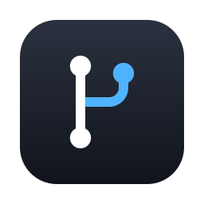

gitmenu
Your repositories' changes, history and branches, one click away in the menu bar.
What it does
- Source Control in the style of VS Code: stage, commit, amend, push, pull, sync, stash, conflicts.
- Views modeled on GitLens: Commits, File History, Line History, Search & Compare, Branches, Remotes, Tags, Stashes, Worktrees, Contributors.
- Side-by-side diffs with syntax colors, blame, and staging of single lines.
- A commit graph across every branch.
- Commit messages written on your Mac by Apple Intelligence. Nothing is sent anywhere.
- Menus, shortcuts and settings that follow VS Code and GitLens, in 10 languages.
Install with Homebrew
brew install --cask semanticist21/tap/gitmenu
Requirements
- macOS 13 Ventura or later, Apple silicon or Intel.
- git (Xcode Command Line Tools or Homebrew).
- Commit message generation needs macOS 26 with Apple Intelligence turned on.